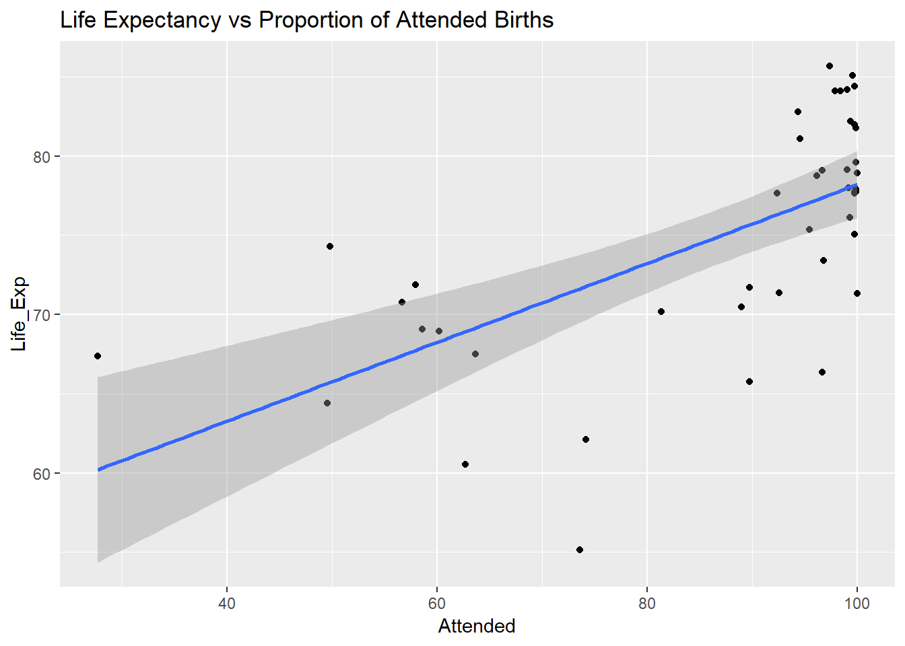
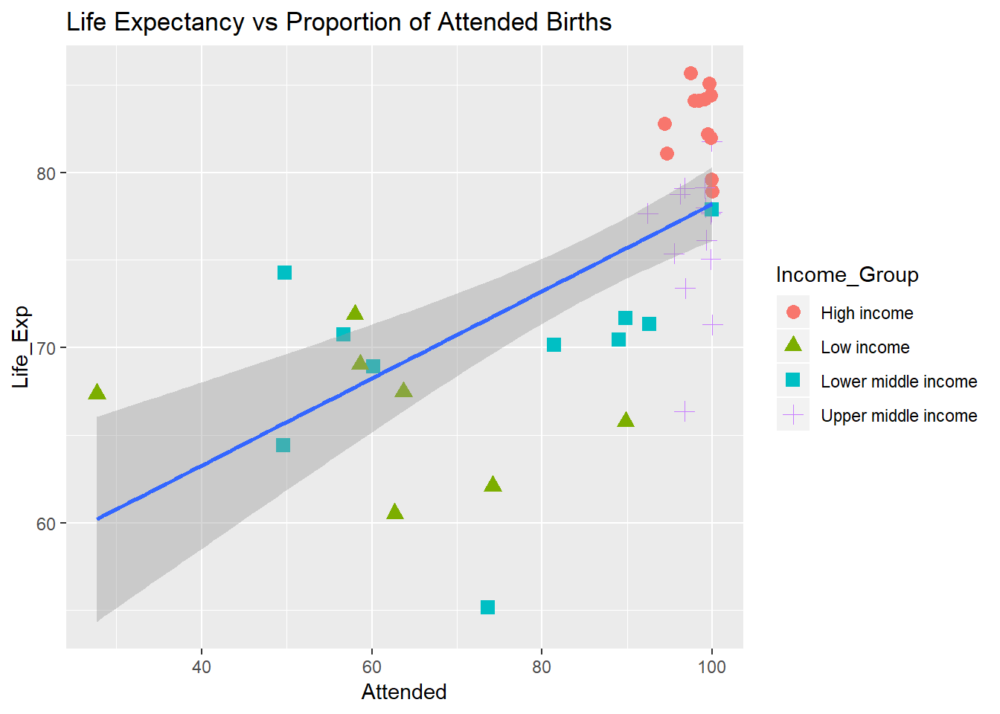

Demo of some data wrangling using a subset of the World Bank Development Indicators “Excel download”" from:
http://datatopics.worldbank.org/world-development-indicators/
Data is available at https://github.com/actsci-UoL/DSAdemo/tree/master/Data and needs to be saved locally in a sub-directory of the working directory called “Data”.
Warning: one of the files is over 50Mb.
indicators <-
read_csv("Data/indicators.csv") %>%
mutate(Country_Code = as.factor(Country_Code),
Indicator_Code = as.factor(Indicator_Code))
country <-
read_csv("Data/country.csv") %>%
mutate(Country_Code = as.factor(Country_Code),
Region = as.factor(Region),
Income_Group = as.factor(Income_Group))For each question below (not the first), find the answer using the dplyr package. In a later tutorial we will run through exctly the same sequence using SQL
num_indic <-
indicators %>%
summarise(Num_indicators = n_distinct(Indicator_Code))
num_indic## # A tibble: 1 x 1
## Num_indicators
## <int>
## 1 1599There are 1599 different indicators.
num_coun <-
indicators %>%
summarise(Num_countries = n_distinct(Country_Code))
num_coun## # A tibble: 1 x 1
## Num_countries
## <int>
## 1 264There are 264 different countries.
reg_groups <-
country %>%
filter(!is.na(Region)) %>%
select(Region) %>%
unique()
reg_groups## # A tibble: 7 x 1
## Region
## <fct>
## 1 Latin America & Caribbean
## 2 South Asia
## 3 Sub-Saharan Africa
## 4 Europe & Central Asia
## 5 Middle East & North Africa
## 6 East Asia & Pacific
## 7 North AmericaThe regional groups are:
| Region |
|---|
| Latin America & Caribbean |
| South Asia |
| Sub-Saharan Africa |
| Europe & Central Asia |
| Middle East & North Africa |
| East Asia & Pacific |
| North America |
.
country_table <-
indicators %>%
select(Country_Code, Country_Name) %>%
unique() %>%
arrange(Country_Code) %>%
sample_n(20)
country_table## # A tibble: 20 x 2
## Country_Code Country_Name
## <fct> <chr>
## 1 BMU Bermuda
## 2 MOZ Mozambique
## 3 FSM Micronesia, Fed. Sts.
## 4 MMR Myanmar
## 5 GUM Guam
## 6 FIN Finland
## 7 ECU Ecuador
## 8 DJI Djibouti
## 9 GAB Gabon
## 10 ERI Eritrea
## 11 OED OECD members
## 12 KHM Cambodia
## 13 SLB Solomon Islands
## 14 SMR San Marino
## 15 BRA Brazil
## 16 HUN Hungary
## 17 HND Honduras
## 18 IBD IBRD only
## 19 CAN Canada
## 20 MHL Marshall IslandsA sample of countries and country codes:
| Country_Code | Country_Name |
|---|---|
| BMU | Bermuda |
| MOZ | Mozambique |
| FSM | Micronesia, Fed. Sts. |
| MMR | Myanmar |
| GUM | Guam |
| FIN | Finland |
| ECU | Ecuador |
| DJI | Djibouti |
| GAB | Gabon |
| ERI | Eritrea |
| OED | OECD members |
| KHM | Cambodia |
| SLB | Solomon Islands |
| SMR | San Marino |
| BRA | Brazil |
| HUN | Hungary |
| HND | Honduras |
| IBD | IBRD only |
| CAN | Canada |
| MHL | Marshall Islands |
nr_country_table <-
country %>%
filter(is.na(Region)) %>%
select(Country_Code) %>%
unique()
nr_country_table## # A tibble: 46 x 1
## Country_Code
## <fct>
## 1 ARB
## 2 CEB
## 3 CSS
## 4 EAP
## 5 EAR
## 6 EAS
## 7 ECA
## 8 ECS
## 9 EMU
## 10 EUU
## # ... with 36 more rowsCountry codes not associated with a region:
| Country_Code |
|---|
| ARB |
| CEB |
| CSS |
| EAP |
| EAR |
| EAS |
| ECA |
| ECS |
| EMU |
| EUU |
| FCS |
| HIC |
| HPC |
| IBD |
| IBT |
| IDA |
| IDB |
| IDX |
| LAC |
| LCN |
| LDC |
| LIC |
| LMC |
| LMY |
| LTE |
| MEA |
| MIC |
| MNA |
| NAC |
| OED |
| OSS |
| PRE |
| PSS |
| PST |
| SAS |
| SSA |
| SSF |
| SST |
| TEA |
| TEC |
| TLA |
| TMN |
| TSA |
| TSS |
| UMC |
| WLD |
le_indics <-
indicators %>%
filter(str_detect(Indicator_Name, "(?i)life expectancy")) %>% # (?i) says ignore case
select(Indicator_Name, Indicator_Code) %>%
unique()
le_indics## # A tibble: 3 x 2
## Indicator_Name Indicator_Code
## <chr> <fct>
## 1 Life expectancy at birth, female (years) SP.DYN.LE00.FE.IN
## 2 Life expectancy at birth, male (years) SP.DYN.LE00.MA.IN
## 3 Life expectancy at birth, total (years) SP.DYN.LE00.INLife expectancy indicators:
| Indicator_Name | Indicator_Code |
|---|---|
| Life expectancy at birth, female (years) | SP.DYN.LE00.FE.IN |
| Life expectancy at birth, male (years) | SP.DYN.LE00.MA.IN |
| Life expectancy at birth, total (years) | SP.DYN.LE00.IN |
le_range <-
indicators %>%
filter(Indicator_Code == "SP.DYN.LE00.FE.IN") %>%
summarise(Av_Life_Exp = mean(Yr2016, na.rm = TRUE),
Min_Life_Exp = min(Yr2016, na.rm = TRUE),
Max_Life_Exp = max(Yr2016, na.rm = TRUE))
le_range## # A tibble: 1 x 3
## Av_Life_Exp Min_Life_Exp Max_Life_Exp
## <dbl> <dbl> <dbl>
## 1 74.5 52.4 87.3The range of female life expectance, at birth in 2016, is:
| Av_Life_Exp | Min_Life_Exp | Max_Life_Exp |
|---|---|---|
| 74.49838 | 52.417 | 87.3 |
worst_le_coun <-
indicators %>%
filter(Indicator_Code == "SP.DYN.LE00.FE.IN") %>%
filter(Yr2016 == min(Yr2016, na.rm = TRUE)) %>%
select(Country_Name, Yr2016)
worst_le_coun## # A tibble: 1 x 2
## Country_Name Yr2016
## <chr> <dbl>
## 1 Sierra Leone 52.4The lowest life expectancy is in Sierra Leone.
# Find out the name of the indicator and its code.
indicators %>%
filter(str_detect(Indicator_Name, "(?i)birth"),
str_detect(Indicator_Name, "(?i)attend")) %>%
select(Indicator_Name, Indicator_Code) %>%
unique()## # A tibble: 1 x 2
## Indicator_Name Indicator_Code
## <chr> <fct>
## 1 Births attended by skilled health staff (% of total) SH.STA.BRTC.ZS# Make a plot.
plt.df <- indicators %>%
select(Country_Code, Indicator_Code, Yr2016) %>%
filter(Indicator_Code == "SH.STA.BRTC.ZS" | Indicator_Code == "SP.DYN.LE00.FE.IN") %>%
filter(!is.na(Yr2016)) %>%
spread(key = Indicator_Code, value = Yr2016) %>%
drop_na() %>%
rename(Life_Exp = SP.DYN.LE00.FE.IN, Attended = SH.STA.BRTC.ZS)
ggplot(plt.df) +
geom_point(aes(Attended, Life_Exp)) +
geom_smooth(aes(Attended, Life_Exp), method = lm) +
ggtitle("Life Expectancy vs Proportion of Attended Births")
Another version.
plt.df <- indicators %>%
select(Country_Code, Indicator_Code, Yr2016) %>%
filter(Indicator_Code == "SH.STA.BRTC.ZS" | Indicator_Code == "SP.DYN.LE00.FE.IN") %>%
filter(!is.na(Yr2016)) %>%
spread(key = Indicator_Code, value = Yr2016) %>%
drop_na() %>%
rename(Life_Exp = SP.DYN.LE00.FE.IN, Attended = SH.STA.BRTC.ZS) %>%
left_join(country)
ggplot(plt.df) +
geom_point(aes(Attended, Life_Exp, color = Income_Group, shape = Income_Group), size = 3) +
geom_smooth(aes(Attended, Life_Exp), method = lm) +
ggtitle("Life Expectancy vs Proportion of Attended Births")
# Print the countries with life expectancy > 85 together with their region and Income group.
long_le_coun <-
indicators %>%
select(Country_Code, Country_Name, Indicator_Code, Yr2016) %>%
filter(Indicator_Code == "SP.DYN.LE00.FE.IN") %>%
filter(Yr2016 > 85) %>%
rename(Fem_Life_Exp = Yr2016) %>%
left_join(country) %>%
select(Country_Name, Region, Fem_Life_Exp) %>%
arrange(desc(Fem_Life_Exp))
long_le_coun## # A tibble: 11 x 3
## Country_Name Region Fem_Life_Exp
## <chr> <fct> <dbl>
## 1 Hong Kong SAR, China East Asia & Pacific 87.3
## 2 Japan East Asia & Pacific 87.1
## 3 Macao SAR, China East Asia & Pacific 86.8
## 4 Spain Europe & Central Asia 86.3
## 5 France Europe & Central Asia 85.7
## 6 Italy Europe & Central Asia 85.6
## 7 Switzerland Europe & Central Asia 85.6
## 8 Korea, Rep. East Asia & Pacific 85.4
## 9 Luxembourg Europe & Central Asia 85.4
## 10 Bermuda North America 85.1
## 11 Singapore East Asia & Pacific 85.1Here are the longer lived countries:
| Country_Name | Region | Fem_Life_Exp |
|---|---|---|
| Hong Kong SAR, China | East Asia & Pacific | 87.300 |
| Japan | East Asia & Pacific | 87.140 |
| Macao SAR, China | East Asia & Pacific | 86.776 |
| Spain | Europe & Central Asia | 86.300 |
| France | Europe & Central Asia | 85.700 |
| Italy | Europe & Central Asia | 85.600 |
| Switzerland | Europe & Central Asia | 85.600 |
| Korea, Rep. | East Asia & Pacific | 85.400 |
| Luxembourg | Europe & Central Asia | 85.400 |
| Bermuda | North America | 85.130 |
| Singapore | East Asia & Pacific | 85.100 |
# Print the countries with life expectancy < 60 together with their region and Income group.
short_le_coun <-
indicators %>%
select(Country_Code, Country_Name, Indicator_Code, Yr2016) %>%
filter(Indicator_Code == "SP.DYN.LE00.FE.IN") %>%
filter(Yr2016 < 60) %>%
rename(Fem_Life_Exp = Yr2016) %>%
left_join(country) %>%
select(Country_Name, Region, Fem_Life_Exp) %>%
drop_na() %>%
arrange(desc(Fem_Life_Exp))
short_le_coun## # A tibble: 13 x 3
## Country_Name Region Fem_Life_Exp
## <chr> <fct> <dbl>
## 1 Burundi Sub-Saharan Africa 59.5
## 2 Cameroon Sub-Saharan Africa 59.2
## 3 Equatorial Guinea Sub-Saharan Africa 59.2
## 4 Guinea-Bissau Sub-Saharan Africa 59.1
## 5 Mali Sub-Saharan Africa 58.7
## 6 Somalia Sub-Saharan Africa 58.0
## 7 South Sudan Sub-Saharan Africa 57.8
## 8 Lesotho Sub-Saharan Africa 56.4
## 9 Cote d'Ivoire Sub-Saharan Africa 55.1
## 10 Nigeria Sub-Saharan Africa 54.2
## 11 Chad Sub-Saharan Africa 54.1
## 12 Central African Republic Sub-Saharan Africa 54.0
## 13 Sierra Leone Sub-Saharan Africa 52.4And the short-lived countries:
| Country_Name | Region | Fem_Life_Exp |
|---|---|---|
| Burundi | Sub-Saharan Africa | 59.492 |
| Cameroon | Sub-Saharan Africa | 59.232 |
| Equatorial Guinea | Sub-Saharan Africa | 59.161 |
| Guinea-Bissau | Sub-Saharan Africa | 59.134 |
| Mali | Sub-Saharan Africa | 58.674 |
| Somalia | Sub-Saharan Africa | 57.991 |
| South Sudan | Sub-Saharan Africa | 57.839 |
| Lesotho | Sub-Saharan Africa | 56.370 |
| Cote d’Ivoire | Sub-Saharan Africa | 55.141 |
| Nigeria | Sub-Saharan Africa | 54.222 |
| Chad | Sub-Saharan Africa | 54.138 |
| Central African Republic | Sub-Saharan Africa | 54.042 |
| Sierra Leone | Sub-Saharan Africa | 52.417 |
# Rename the life expectancy column to something meaningful and order by region and life expectancy.
av_le <-
indicators %>%
select(Country_Code, Country_Name, Indicator_Code, Yr2016) %>%
filter(Indicator_Code == "SP.DYN.LE00.FE.IN") %>%
left_join(country) %>%
select(Country_Name, Region, Income_Group, Yr2016) %>%
group_by(Income_Group, Region) %>%
summarise(Av_Fem_Life_Exp = mean(Yr2016, na.rm = TRUE)) %>%
drop_na() %>%
arrange(Region, desc(Av_Fem_Life_Exp))
av_le## # A tibble: 24 x 3
## # Groups: Income_Group [4]
## Income_Group Region Av_Fem_Life_Exp
## <fct> <fct> <dbl>
## 1 High income East Asia & Pacific 83.6
## 2 Upper middle income East Asia & Pacific 77.1
## 3 Low income East Asia & Pacific 75.1
## 4 Lower middle income East Asia & Pacific 71.7
## 5 High income Europe & Central Asia 83.3
## 6 Upper middle income Europe & Central Asia 77.8
## 7 Lower middle income Europe & Central Asia 75.5
## 8 Low income Europe & Central Asia 74.2
## 9 High income Latin America & Caribbean 80.2
## 10 Upper middle income Latin America & Caribbean 77.3
## # ... with 14 more rowsAverage life expectancies:
| Income_Group | Region | Av_Fem_Life_Exp |
|---|---|---|
| High income | East Asia & Pacific | 83.61193 |
| Upper middle income | East Asia & Pacific | 77.08483 |
| Low income | East Asia & Pacific | 75.07100 |
| Lower middle income | East Asia & Pacific | 71.70246 |
| High income | Europe & Central Asia | 83.34810 |
| Upper middle income | Europe & Central Asia | 77.75850 |
| Lower middle income | Europe & Central Asia | 75.48883 |
| Low income | Europe & Central Asia | 74.18700 |
| High income | Latin America & Caribbean | 80.21331 |
| Upper middle income | Latin America & Caribbean | 77.25928 |
| Lower middle income | Latin America & Caribbean | 76.03000 |
| Low income | Latin America & Caribbean | 65.51500 |
| High income | Middle East & North Africa | 79.62862 |
| Upper middle income | Middle East & North Africa | 76.50400 |
| Lower middle income | Middle East & North Africa | 73.62000 |
| Low income | Middle East & North Africa | 71.75250 |
| High income | North America | 83.49433 |
| Upper middle income | South Asia | 78.48400 |
| Lower middle income | South Asia | 72.21060 |
| Low income | South Asia | 68.45050 |
| High income | Sub-Saharan Africa | 80.20000 |
| Upper middle income | Sub-Saharan Africa | 67.97000 |
| Lower middle income | Sub-Saharan Africa | 63.46286 |
| Low income | Sub-Saharan Africa | 61.90789 |